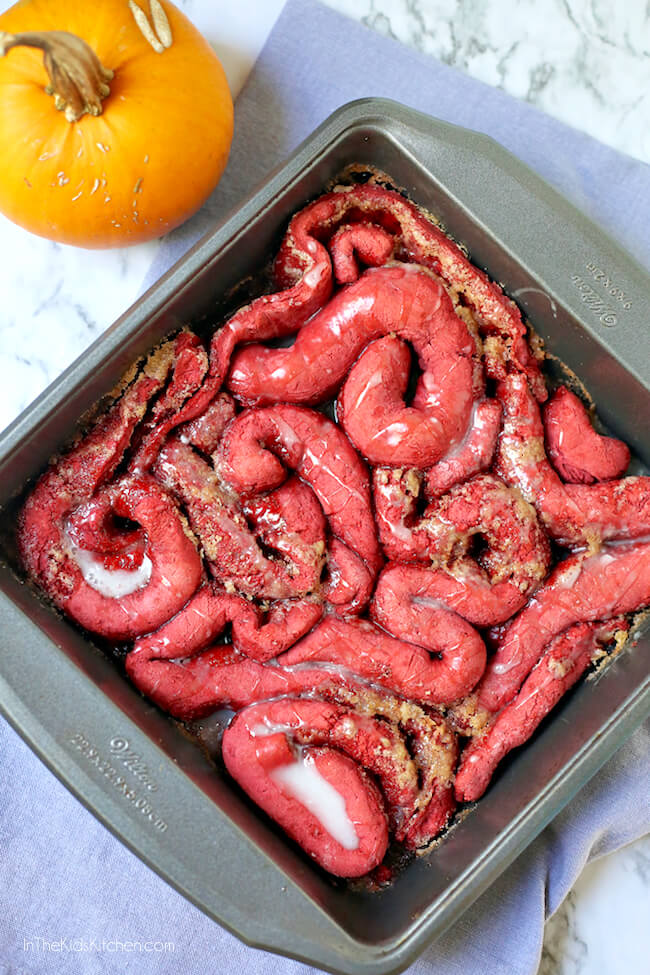

Zombie Guts
“Zombie Guts” Halloween Cinnamon Rolls
My husband is a huge fan of “The Walking Dead” (both the TV show and original comic series). I knew he would get a kick out of these goofy & gory Zombie Guts cinnamon rolls!
Kids also love this gross-out dessert because it looks just like “guts” of course! And tastes amazing!
Ingredients
Original Cheese Zombie Ingredients
- 3 packets of active dry yeast or 2 and 3/4 tablespoons (just guestimate that 3/4 tablespoon)
- 2 1/4 cup warm (110 degrees) water
- 3/4 cup instant non-fat powdered milk
- 6 1/2 cups flour
- 1 1/4 lb American Cheese or Velveeta
Instructions
- In a large mixing bowl, mix yeast with water, let sit five minutes until it begins to get bubbly. Add the sugar, oil and powdered milk and mix on low with a paddle attachment.
- Change to a dough hook and add the flour and salt and knead about 8 minutes until dough is smooth and elastic
- Divide into 2 equal parts, form each into a ball. Place each in a bowl sprayed with cooking spray or coated with oil, smooth side down, turning the smooth side back up (so it is covered with a light coating of the oil). Cover the bowl with plastic wrap and let rise in warm place for an hour or so until doubled in size. When risen, save the plastic wrap to cover the tray of Zombies while it rises.
- On a lightly sprayed or oiled half sheet pan (17 x 12 x 1), stretch one ball of dough evenly to the edges and slightly above. Top with sliced cheese and any other filling if using. Take the second ball and stretch it out on a counter next to the tray so it is a rectangle several inches smaller than the tray.
- Pick it up (it will hopefully just stretch to about the size of the tray as you do so) and place over the top of the cheese. Gently, trying not to disturb the cheese, stretch and pinch the edges of the top layer to the bottom, sealing well.